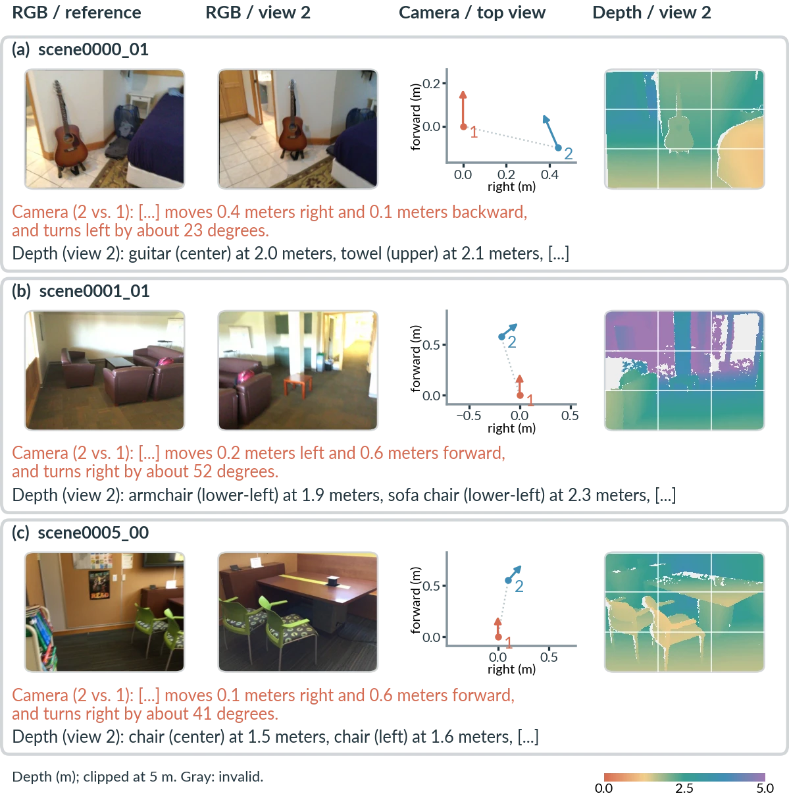
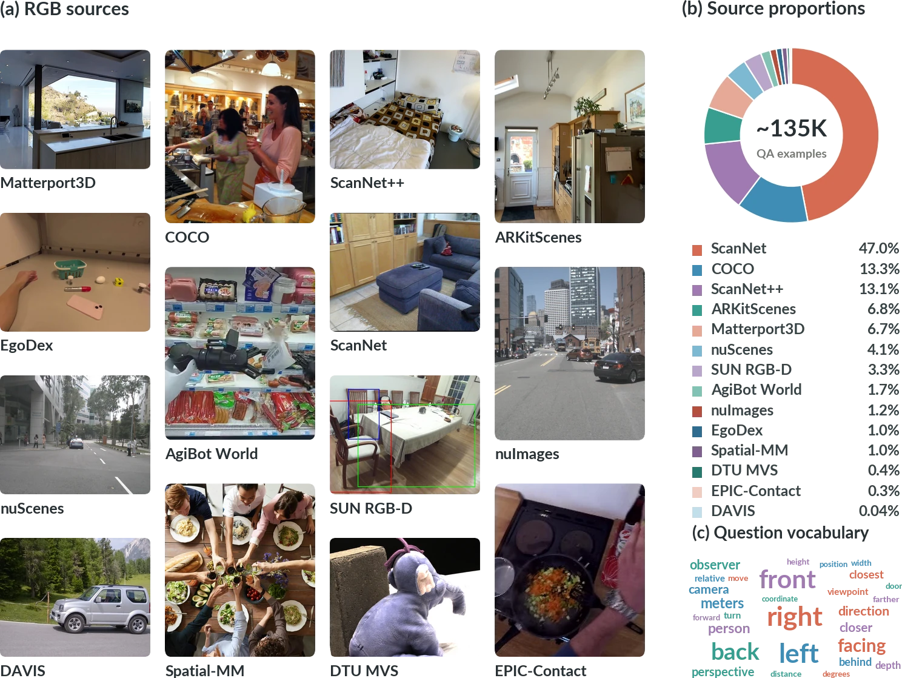
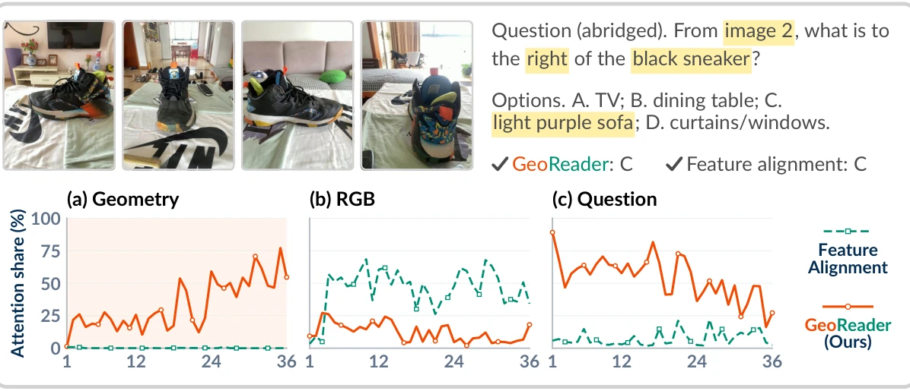
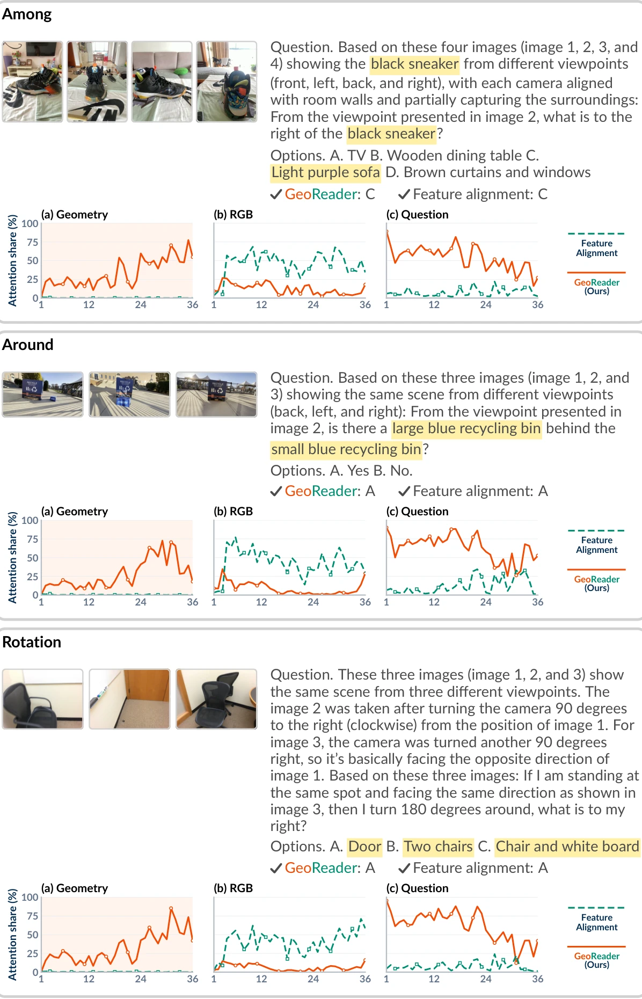

Learn a readable interface
Geometry foundation models estimate camera poses and depth maps from RGB. Geometric Readers turn these signals into tokens. Description prediction trains each Reader through a frozen VLM.
GeoReader: Learning Latent Geometry for Spatial Reasoning in Vision-Language Models
Geometry foundation models can recover 3D structure from images. GeoReader learns to express that structure as geometric tokens a vision-language model can interpret, then use to answer spatial questions.
Vision-language models (VLMs) struggle with metric and multi-view relationships that remain implicit in RGB observations. Geometry foundation models recover this structure from RGB, but existing methods either fuse the estimated features with visual tokens and learn to use them from question answering alone, or align VLM latents with geometry features. Capturing geometry, however, does not ensure its use: zeroing the aligned latents of a released feature-alignment model leaves its accuracy unchanged. We introduce GeoReader, a framework that learns geometric representations for the VLM that reads them. First, we train lightweight Geometric Readers to produce continuous input tokens, supervising them with geometry descriptions decoded by a frozen VLM, so that the Readers express geometry in a form the target model can already read. We then freeze the Readers to preserve this interface while fine-tuning the VLM on spatial QA, with geometry injection conditioned on the question. Geometry descriptions serve only as training targets: at inference, the VLM answers directly from the continuous geometric tokens without generating a geometry chain of thought. With geometry predicted from RGB images, GeoReader reaches 94.3 on MindCube-Tiny with Qwen3-VL-4B and, with a multi-source QA mixture, an average of 71.8 across six additional spatial benchmarks with Qwen3.5-9B. These results suggest that the most useful geometric representation is the one the receiving model can use, not necessarily the one that reconstructs geometry most accurately.
Spatial questions about distance, viewpoint, and camera motion need more than a good image representation. They need geometry that participates in the answer.
Existing approaches either fuse estimated geometric features into the VLM during question answering, or use those features to supervise intermediate representations. Both can capture geometry. Yet capturing it does not by itself show that the answer depends on it.
The receiving VLM helps define a useful geometric interface. A frozen VLM reads the Reader's tokens and predicts geometry descriptions; this language task trains the Reader to express spatial relationships the VLM can already decode.
Question-answer supervision trains the VLM to use fused image and geometry features. The geometric interface receives no separate language-level training objective.
A feature loss encourages a VLM latent to capture geometry. Whether the answer later uses that latent is a separate question, which can be checked with interventions.
Stage 1 trains Geometric Readers with description prediction through a frozen VLM. Stage 2 freezes those Readers and adapts the VLM and geometry injector for answers.
Geometry foundation models estimate camera poses and depth maps from RGB. Geometric Readers turn these signals into tokens. Description prediction trains each Reader through a frozen VLM.
The Readers stay frozen. A read pass gathers the question context; the geometry injector uses it to modulate geometric tokens. The answer pass then uses those tokens for spatial QA.

Geometry descriptions are training targets in Stage 1. At inference, the model answers from continuous geometric tokens.
Stage 1 uses RGB view windows with camera poses, depth maps, and geometry descriptions. Stage 2 trains question answering on a separate collection of approximately 135K examples from multiple RGB sources.

Three ScanNet training examples. Camera poses use the first view as their reference; depth colors are clipped at 5 m, and gray marks invalid depth.

The approximately 135K-example QA collection spans 14 RGB sources. The photos are examples; their displayed sizes do not show source frequency.
The paper tests the interface at three points: what the Reader learns, whether answers use its tokens, and how the full system performs on spatial QA.
Compare description-supervised Readers with training recipes that do not first establish a readable interface.
Remove or shuffle geometry content and examine how answers change under controlled settings.
Evaluate across seven spatial reasoning benchmarks and three VLM families, including comparisons with vanilla SFT, the same QA fine-tuning without geometry.
Intervention results use MindCube-Tiny and Qwen2.5-VL-3B; GeoReader uses annotation-derived camera geometry, and feature alignment is the released first-stage 3DThinker checkpoint.
| Backbone | MindCube-Tiny base → GeoReader | Six-benchmark avg. base → GeoReader |
|---|---|---|
| Qwen2.5-VL-3B | 38.3 → 81.1 | 37.8 → 63.6 |
| Qwen2.5-VL-7B | 34.8 → 93.2 | 40.5 → 66.2 |
| Qwen3-VL-2B | 35.9 → 86.5 | – |
| Qwen3-VL-4B | 29.6 → 94.3 | 49.5 → 69.3 |
| Qwen3-VL-8B | 38.7 → 93.4 | 51.1 → 70.0 |
| Qwen3.5-4B | 47.8 → 82.2 | 44.6 → 70.3 |
| Qwen3.5-9B | – | 50.5 → 71.8 |
| Geometric interface | Acc. |
|---|---|
| No Stage 1 (QA loss only) | 54.7 |
| Feature alignment (released) | 62.7 |
| Readability pretraining, Reader tuned in QA | 76.4 |
| GeoReader (Reader frozen) | 89.2 |
| Recipe | Acc. | Tokens | Time (s) |
|---|---|---|---|
| Vanilla SFT | 68.6 | 16.2 | 0.5 |
| Joint description + QA SFT | 67.0 | 16.3 | 0.5 |
| Generated Text-CoT | 72.9 | 119.3 | 2.5 |
| Descriptions in prompt | 81.0 | 16.3 | 0.5 |
| GeoReader (pair) | 89.2 | 16.2 | 0.5 |
The attention plots show where answer tokens look in questions that both models answer correctly. Geometry-content interventions test whether GeoReader's answers depend on its tokens.

On this MindCube-Tiny example, GeoReader's answer tokens attend more to geometric tokens than the feature-alignment model's answer tokens attend to its latents.

One example from each MindCube-Tiny category. Both models answer all three correctly; the curves compare direct answer-token attention in these cases.
Correct answers and failure cases with geometry predicted from RGB by Depth Anything 3.

Two correct MMSI-Bench answers with DA3 geometry. The point clouds on the right come from predicted depth; circles identify the objects named in each question.

Selected correct responses with predicted pose or depth, including viewpoint, distance, and view-specific questions.

Three failure cases show an incorrect predicted pose, reversed depth order, and an answer that matches another reference view.


1The Hong Kong University of Science and Technology (Guangzhou) 2Agency for Science, A*STAR 3Peking University 4Apple 5National University of Singapore 6The Hong Kong University of Science and Technology 7Beijing Institute for General Artificial Intelligence
*Equal contribution · ✉Corresponding authors · †Project lead
@misc{li2026georeader,
title = {{GeoReader}: Learning Latent Geometry for Spatial Reasoning in Vision-Language Models},
author = {Rong Li and Shijie Li and Jiangyong Huang and Lingdong Kong and Jiaming Zhou and Dongyue Lu and Zeying Gong and Baoxiong Jia and Junwei Liang and Siyuan Huang},
year = {2026}
}